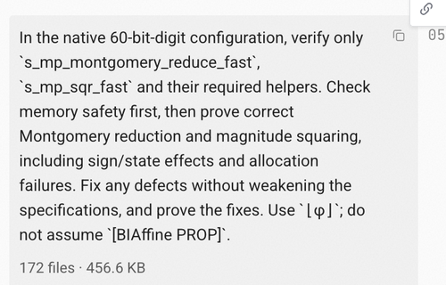

This page will be periodically updated with the awesome people I know to be using Iris-Lean.
CTE A continuous probabilistic program logic
BPPL A formalization of the Lilac probabilistic separation logic
Iris-Tutorial A work in progress port of the Iris tutorial
pcOL Probabilistic Concurrent Outcome Logic (pcOL)
Perennial A program logic for distributed Go programs
MachCSL A separation logic for verifying the correctness of an operating system
Porting to Lean. After we had finished doing all of this verification work in Rocq, we asked an agent to port the whole verification framework and proofs to Lean. This required some supervision, but far less than the original development. The resulting Lean port was about half the size of the Rocq development, in terms of lines of proof, and it compiled (checking all of the proofs) about 5x faster, through a combination of cleanup, simplifications, and better optimizations in Lean itself. (This paper, including all of the reported numbers, describes the original Rocq development.)
One surprising finding is that, when one of the authors of this paper switched the git repo from Rocq to Lean, the other author barely noticed (aside from the performance improvements), since the level of discussion with the agent was far above the specific syntax differences between Rocq and Lean; the agent was able to switch all of its work from Rocq to Lean transparently.
- Kaashoek and Zeldovich, “Extending concurrent separation logic to the hardware level to verify the xv6 OS kernel on RISC-V with AI agents”.
CatCrypt Game-based cryptographic security proofs

On their website, they say:
A new version of Iris for Lean is a crucial building block in the logical foundations of &Truth’s tools.
I don’t know if they use Iris-Lean, but I’ll settle for being crucial.
If you’re using Iris-Lean to do awesome things, email
mjd9606@nyu.edu with a link to your project, and the
title “Awesome Iris Lean”.